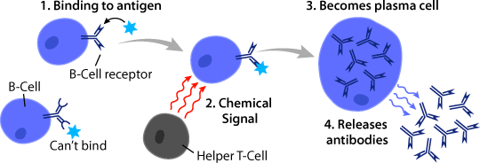

What Happens When Rubella Enters?
Rubella enters mostly by indirect contact. This indirect contact is air, and the virus particles will go out in the air and infect. Once a host finally gets infected, the virus will enter the throat first. Then, the virus will come into host lung tissue where it will multiply and infect our cells. Since host lung tissue is in our respiratory system, the virus can easilly travel through the bloodstream. To do so, the virus must infect our cells. The infected cells will then travel through the bloodstream to places around the body targeting organs. Some of these organs are as follows:
- Thymus
- Spleen
- Lymph Nodes
- Skin
- Lungs

Body Organs made by AI2 at this page.CC-0(free use).
Homeostasis Mechanisms
As interesting how our body works, the body must use the immune system to try and protect against the virus. As such, these 2 cells called the B and T cells are at work. The B cell is used to fight invaders outside the cell while the T cell is used to defend against infection. Both of them are like a partner that are made of white blood cells. They make antibodies together to even alert other systems that a virus is in the body as well as protect them. However, Rubella was reported of one of the first viruses to be unaffected by these cells. Therefore, Rubella can easilly infect our cells. Our body still tries to prevent the virus from spreading, though. This shows that our body is giving negative feedback for its use of immunity to the virus to try and decrease the spread of virus.
B and T cells making antibodies made by ASU School of Life Sciences at this page. CC-BY-SA.